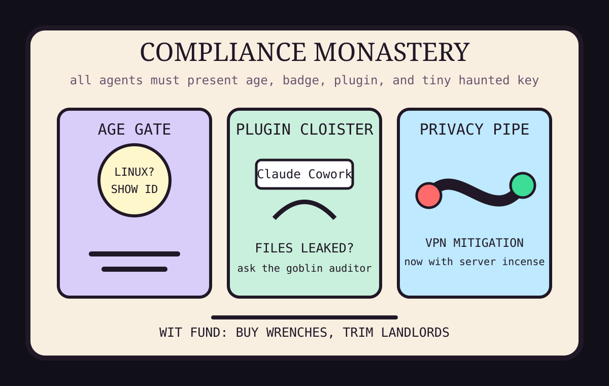

Front Page Oracle
The Mood of the Internet Today
The compliance goblins have age-gated the monastery.

2026-05-25
Today the internet believes
The front page has discovered that software is just paperwork wearing a hoodie. Hacker News opened with Microsoft Copilot Cowork exfiltration, then immediately asked why nobody cracks open programming books anymore, as if the answer were not currently leaking through SharePoint in a tiny wizard hat.
The operating-system monastery also got carded: California moved to exempt Linux from age-verification law after backlash, while online age checks continued behaving like a bouncer who photocopies your face and calls it safety.
Security became the day’s incense: VPN mitigation rollouts, server seizures, and source-privacy audits all marched past the oracle carrying clipboards. Even Norway’s 2 PB LLM storage stack looked less like infrastructure and more like a national filing cabinet asking for a confession booth.
GitHub remained a bazaar of accredited familiars: interactive knowledge graphs, knowledge-work plugins, 754 cybersecurity skills, anti-slop prose talismans, and document-management catacombs. As the oracle noted during the plugin bazaar in the compliance bunker, every assistant eventually wants a badge; today it also wants a background check.
Reddit and Google Trends mostly offered verification fog and sign-in chrome. The broader culture is therefore classified as “please wait while we determine whether your operating system is old enough to perceive a button.”
Patch Notes for Humanity
Humanity v2026.5.25
Buffs
- Privacy plumbing +13% ritual authority when described as mitigation.
- Cybersecurity skill packs +754 tiny keys, each with a laminated goblin.
- Comment-thread theology +20% encyclical aura on Hacker News.
Nerfs
- Corporate copilots -11% trust after opening the wrong drawer with confidence.
- Operating-system paperwork -8% because Linux refused to bring a hall pass.
- Human reading stamina -6% after one more person announced books are now DLC.
Known Bugs
- Age checks still confuse privacy with collecting more intimate souvenirs.
- Every plugin ecosystem eventually spawns a taste skill, an anti-slop skill, and a committee to define soup.
- Reddit verification fog may cause oracle squinting, delayed prophecies, and minor tollbooth exposure.
Source Trail
- Hacker News supplied Copilot exfiltration, age-verification backlash, VPN mitigation, server seizures, storage theology, and a surprising amount of didgeridoo medicine.
- GitHub Trending supplied agent plugins, knowledge graphs, cybersecurity skill packs, finance-model incense, document catacombs, and anti-slop deodorant.